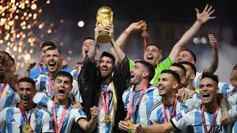
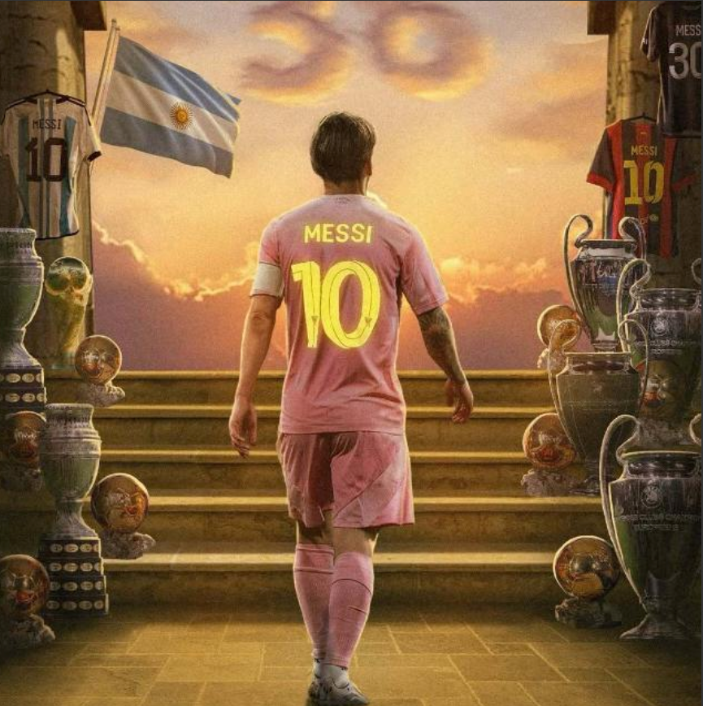

Lionel Messi, né le 24 juin 1987 à Rosario, est un footballeur argentin considéré comme l'un des meilleurs joueurs de football de tous les temps.
Il a passé la majeure partie de sa carrière au FC Barcelone, où il a remporté de nombreux titres, dont la Ligue des champions et plusieurs Ballons d'Or.
En 2021, il a rejoint le Paris Saint-Germain (PSG) où il préparera au calme sa coupe du monde.
Messi est connu pour sa technique exceptionnelle, sa vision du jeu et sa capacité à marquer des buts décisifs.

Messi a passé 21 ans au FC Barcelone, son club de coeur et l'a quitté en 2021 avec pas moins de:
Faisant de lui le meilleur buteur du club et une legende du club
Depuis sa défaite en finale de coupe du monde 2014, Les Argentins n'ont eu de cesser de mépriser notre légende.
Lui disant qu'il n'avait pas la carrure d'un champion, et qu'il ne ramènera pas la coupe du monde comme Maradona.
Ce fut arrivé au point où Messi avait décidé de prendre sa retraite internationale en 2016.
Mais comme un baobab, il a su prendre sur lui ces critiques et est revenu plus fort.
Certe il est éliminé en 2018, par la France, mais c'est contre cette même France qu'il remportera sa première coupe du monde et la deuxième de sa selection en 2022.
Et comme celà n'était pas suffisant, il a également remporté la copa America en 2021 et 2024, ainsi que la finalissima en 2022.
Mettant ainsi fin aux critiques qui pesaient sur lui.


En 2023, Messi a décidé de rejoindre l'Inter Miami en Major League Soccer (MLS), marquant ainsi un nouveau chapitre de sa carrière.
Bien que certains aient critiqué ce choix, Messi continue de briller sur le terrain et d'inspirer des millions de fans à travers le monde.
Son arrivée en MLS a suscité un engouement sans précédent pour le football aux États-Unis, et il continue de démontrer son talent exceptionnel.
Peut être ce choix est annonciateur de sa dernière danse dans le football après nous avoir tant éblouit, espérant que la prochaine génération vera
naître un nouveau prodige du ballon rond.